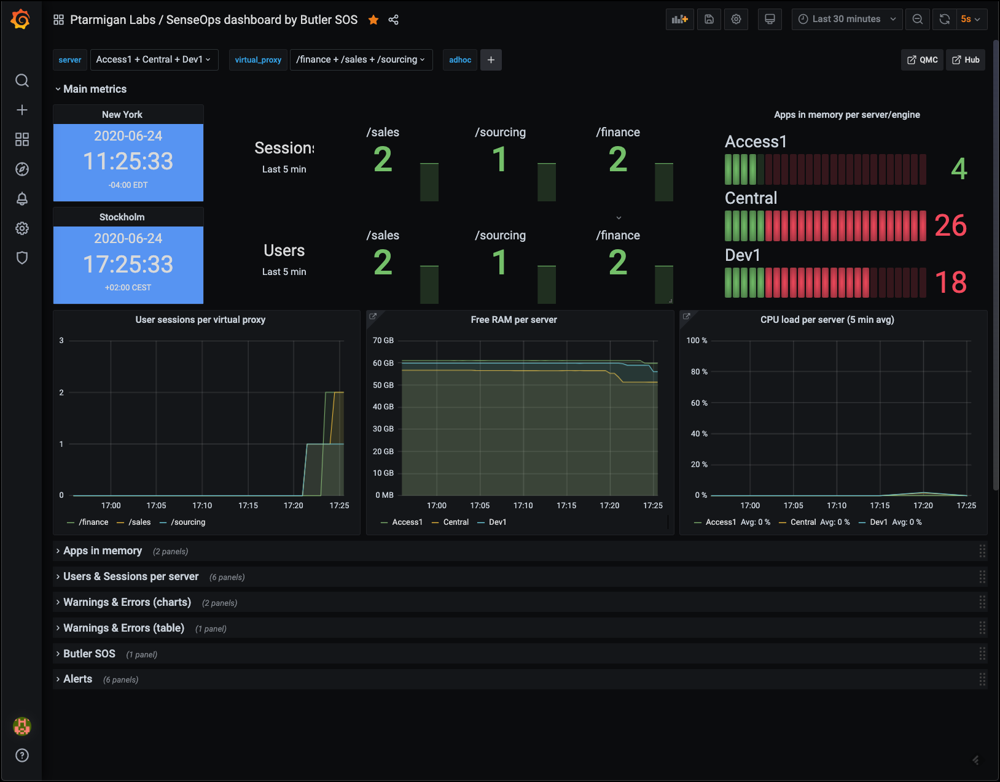
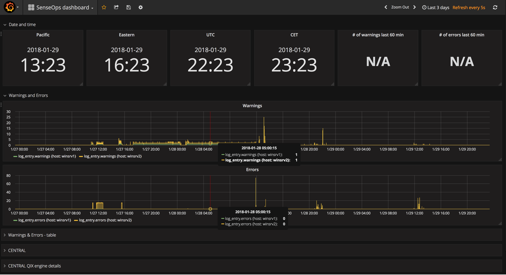
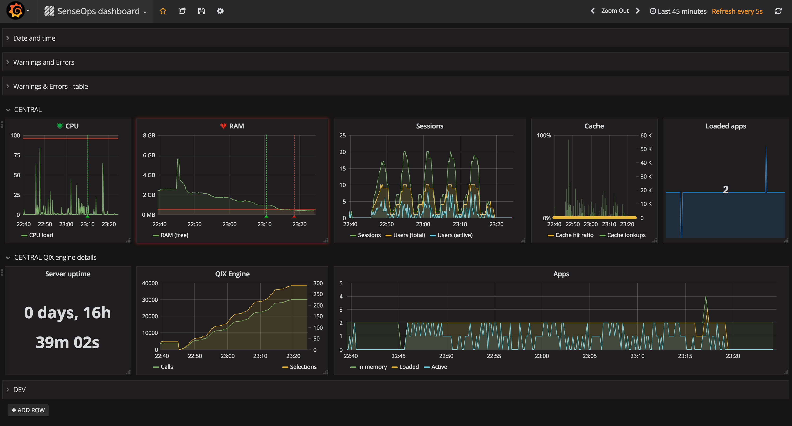

Overview
This page provides the general steps to get started with Butler SOS.
It also explains how Butler SOS relates to other tools and services that collectively make up the SenseOps concept.

Qlik Sense + DevOps = SenseOps
Butler SenseOps Stats (“Butler SOS”) is a monitoring tool for Qlik Sense, built with DevOps workflows in mind.
It publishes operational, close to real-time Qlik Sense Enterprise metrics to InfluxDB, Prometheus, New Relic and MQTT. From there it can be visualised using tools like Grafana, New Relic or acted on by downstream systems that listen to the MQTT topics used by Butler SOS.
Butler SOS gathers operational metrics from several sources, including the Sense healthcheck API and Session API.
It also pulls log events from Sense’s Postgres logging database, and forwards these to InfluxDB and MQTT.
Do I really need a tool like this?
Let’s say you are somehow involved in (or maybe even responsible for) your company’s client-managed Qlik Sense Enterprise on Windows (QSEoW) environemnt.
Let’s also assume you have more than 5-10 users in your Sense environment. Maybe you even have business critical data in your Sense apps.
Given the above, the answer is almost certainly “yes” : You can simplify your workday and provide a better analytics experience to your end users by using a tool like Butler SOS.
Why a separate tool for this?
Good question.
While Qlik Sense ships with a great Operations Monitor application, it is not useful or intended for real-time operational monitoring.
The Ops Monitor app is great for retrospective analysis of what happened in a Qlik Sense environment, but for a real-time understanding of what’s going on in a Sense environment something else is needed - enter Butler SOS.
The most common way of using Butler SOS is for creating real-time dashboards based on the data in the InfluxDB or Prometheus database, showing operational metrics for a Qlik Sense Enterprise environment.
Sample screen shots of Grafana dashboards created using data extracted by Butler SOS:



As mentioned above, Butler SOS can also send data to MQTT for use in any MQTT enabled tool or system.
Known limitations & improvement ideas
Things can always be improved, of course. Here are some ideas on things for future versions:
- The MQTT messages are kind of basic, at least when it comes to data from the Sense logs and for detailed user sessions. In both those cases a single text string is sent to MQTT. That’s fine, but assumes the downstream consumer of the MQTT message can parse the string and extract the information of interest.
A better approach would be to send more detailed MQTT messages. Those would be easier to consume and act upon for downstream systems, but it would on the other mean lots more MQTT messages being sent. - Send data as Kafka messages. Same basic idea as for MQTT messages, but having the Sense operational data in Kafka would make it easier to process/use it in (big) data pipelines.
If you have ideas or suggestions on new features, please feel free to add them in the Butler SOS Github project.
Where should I go next?
Ready to move on?
Great! Here are some good starting points
- Examples: Check out some Grafana dashboards to get inspiration what can be done!
- Installation & setup: Learn how to install Butler SOS, then set it up according to your needs.
I have a question or want to report an issue
Feel free to reach out via GitHub discussions for general questions, GitHub issues for bugs, or by email to info@ptarmiganlabs.com.
Security / Disclosure
If you discover any important bug with Butler SOS that may pose a security problem, please disclose it confidentially to security@ptarmiganlabs.com first, so that it can be assessed and hopefully fixed prior to being exploited. Please do not raise GitHub issues for security-related doubts or problems.
Who’s behind Butler SOS?
Butler SOS is an open source project sponsored by Ptarmigan Labs, an IT consulting company in Stockholm, Sweden. The main contributor to the tool is (so far) Göran Sander from same company.
Please refer to the Contribution guidelines page for details on how to contribute, suggest features etc to the tool.